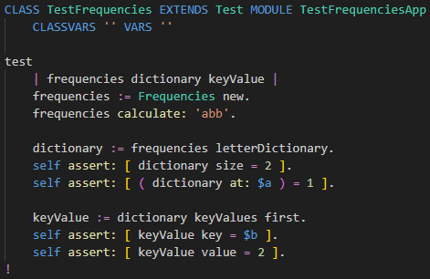

SmallJS has built-in, very lightweight support for adding unit tests.
Compiling test classes can be skipped by the compiler for parts of the library.
This is enabled by default for the standard library parts: Core, Browser and Node.
Let's create unit tests for our class
Frequencies.
In the folder
./src/Test, rename the file
TestCounter.stx to
TestFrequencies.st,
to get it back into the ST build.
Replace its file contents with the following:
CLASS TestFrequencies EXTENDS Test MODULE TestFrequenciesApp
CLASSVARS '' VARS ''
test
| frequencies dictionary keyValue |
frequencies := Frequencies new.
frequencies calculate: 'abb'.
dictionary := frequencies letterDictionary.
self assert: [ dictionary size = 2 ].
self assert: [ ( dictionary at: $a ) = 1 ].
keyValue := dictionary keyValues first.
self assert: [ keyValue key = $b ].
self assert: [ keyValue value = 2 ].
!
On screen it should look like this:

We'll to through it piece by piece below.
To run this test code we have to call unit tests somewhere.
In the file
./src/Frequencies replace the
start method with de following code:
(Adding a third line calling
TestFrequencies all)
start
frequencies := Frequencies new.
self bindElements.
TestFrequencies all.
!
Running tests
In VsCode, now close the app and restart it again with [F5].
After switching back to VSCode, from the browser,
In the bottom pane, the tab 'DEBUG CONSOLE' should look like this:

Now on to testing the GUI...